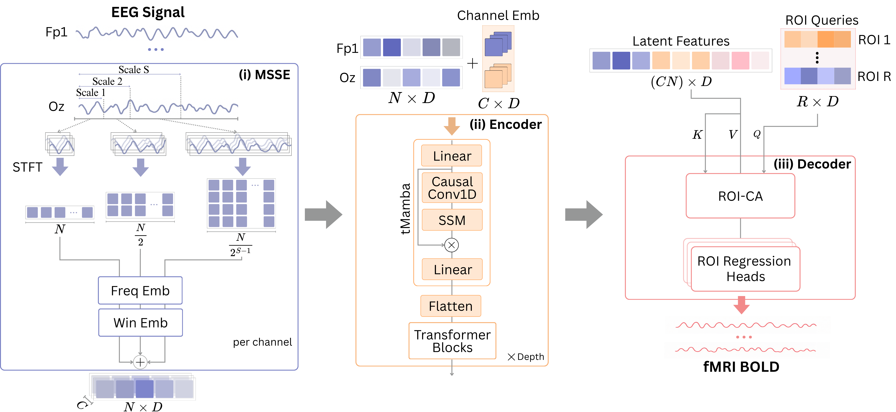
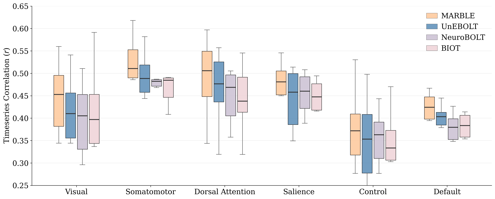
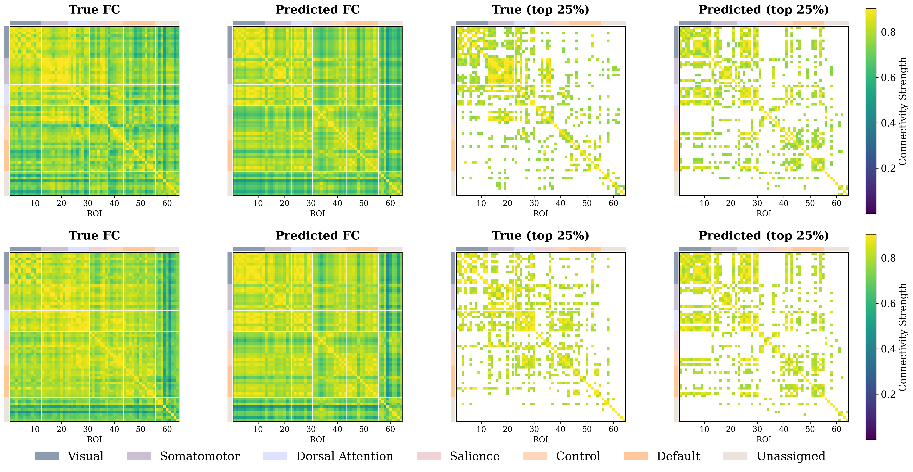

Abstract
Electroencephalography (EEG) is a portable neuroimaging modality that provides high temporal resolution and is more accessible than functional magnetic resonance imaging (fMRI). Recent advances in cross-modal learning have enabled the reconstruction of spatially distributed brain activity, measured by fMRI blood-oxygen-level-dependent (BOLD) signals, from EEG. However, existing whole-brain EEG-to-fMRI frameworks face challenges in efficiently modeling temporal dependencies and learning region-specific representations. To address these challenges, we propose MARBLE (Mamba–Attention for ROI-Conditioned BOLD Estimation), a lightweight framework that combines a hybrid Mamba–Transformer encoder for efficient temporal representation learning and an ROI-wise fMRI decoder that uses cross-attention to selectively attend to relevant EEG features for each region of interest. We evaluate MARBLE on resting-state and auditory-task EEG–fMRI recordings and examine the downstream utility of predicted signals for Alzheimer’s disease (AD) classification. On held-out resting-state scans, MARBLE achieves superior reconstruction performance while reducing model parameters by 3.2× and peak GPU memory usage by 2.3× compared with the strongest baseline. Fine-tuning the resting-state model on auditory-task recordings improves prediction performance over both zero-shot inference and training from scratch. Finally, predicted BOLD signals achieve promising AD classification performance, with a further improvement when combined with EEG-derived features.
EEG vs. fMRI
| Property | EEG | fMRI |
|---|---|---|
| Cost | Low | High |
| Coverage | Cortical | Whole-brain |
| Temporal resolution | High | Low |
| Spatial resolution | Low | High |
| Portability | Good | Poor |
Contributions
-
Efficient whole-brain EEG-to-fMRI translation
We introduce MARBLE, combining a hybrid Mamba–Transformer encoder with ROI-wise cross-attention to achieve competitive BOLD reconstruction with reduced model complexity and GPU memory requirements.
-
Cross-condition transfer evaluation
We investigate the transfer of resting-state representations to auditory-task recordings, comparing fine-tuning with zero-shot inference and training from scratch.
-
Downstream evaluation of predicted BOLD signals
We examine the utility of predicted BOLD FC for AD/CN classification and its complementary value when combined with conventional EEG features.
Demo
Method
MARBLE translates EEG into regional BOLD time series in three stages: a multi-scale spectral embedding extracts time-frequency features, a shared encoder combining temporal state-space modeling with self-attention captures dependencies across time and EEG channels, and an ROI-wise decoder uses region-specific cross-attention to predict BOLD signals.

Multi-Scale Spectral Embedding
The short-time Fourier transform is applied to each EEG channel at multiple window lengths. Scale-specific embeddings are summed, then combined with learnable channel embeddings and positional encodings.
Shared EEG Encoder
Temporal Mamba (tMamba) blocks process each channel’s sequence with selective state-space modeling. Features are then flattened across channels and time, and Transformer blocks capture global dependencies.
ROI-Wise fMRI Decoder
Each brain region has a learnable query that cross-attends to the shared EEG representation, selectively aggregating information across channels and time. An independent linear regression head per region then predicts its BOLD value.
Results
Quantitative comparison on six unseen resting-state test scans, reported as mean ± std.
↑ higher is better, ↓ lower is better.
| Model | Corr r ↑ | MSE ↓ | FC-Corr ↑ | FC-F1 ↑ | Params ↓ | Mem ↓ |
|---|---|---|---|---|---|---|
| BIOT | 0.396 ± 0.041 | 0.229 ± 0.020 | 0.439 ± 0.144 | 0.404 ± 0.025 | 2.0 M | 4.4 GB |
| LaBraM | 0.179 ± 0.075 | 0.250 ± 0.009 | 0.359 ± 0.114 | 0.429 ± 0.006 | 5.8 M | 11.5 GB |
| NeuroBOLT | 0.406 ± 0.038 | 0.223 ± 0.017 | 0.469 ± 0.115 | 0.418 ± 0.012 | 7.9 M | 13.7 GB |
| UnEBOLT | 0.412 ± 0.049 | 0.218 ± 0.019 | 0.469 ± 0.093 | 0.427 ± 0.016 | 8.2 M | 13.8 GB |
| MARBLE | 0.436 ± 0.045 | 0.211 ± 0.015 | 0.475 ± 0.114 | 0.450 ± 0.016 | 2.6 M | 6.0 GB |
| w/o ROI CA | 0.413 ± 0.040 | 0.218 ± 0.019 | 0.395 ± 0.084 | 0.431 ± 0.018 | – | – |
| w/o tMamba | 0.424 ± 0.042 | 0.211 ± 0.018 | 0.440 ± 0.125 | 0.442 ± 0.019 | – | – |
Bold marks the best value per metric; shaded rows are ablation studies. Mem is peak GPU memory during training with a batch size of 64.

Functional Connectivity

BibTeX
@inproceedings{kim2026marble,
title={MARBLE: Lightweight EEG-to-fMRI Translation via Mamba-Attention and ROI-Conditioned Decoding},
author={Kim, Emil and Gahm, Jin Kyu},
booktitle={International Conference on Medical Image Computing and Computer-Assisted Intervention},
pages={340--350},
year={2026},
organization={Springer}
}